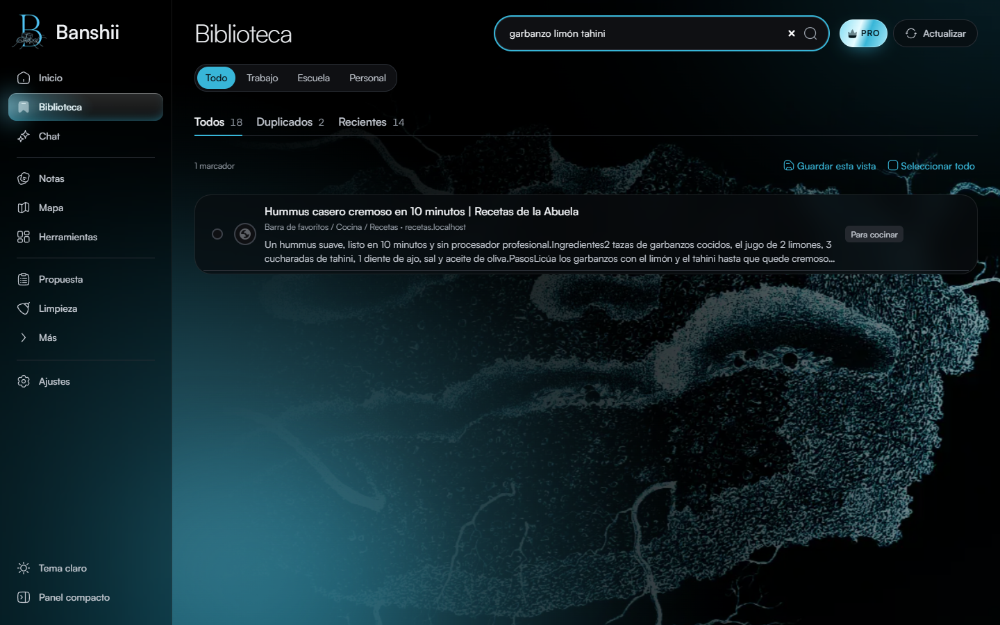
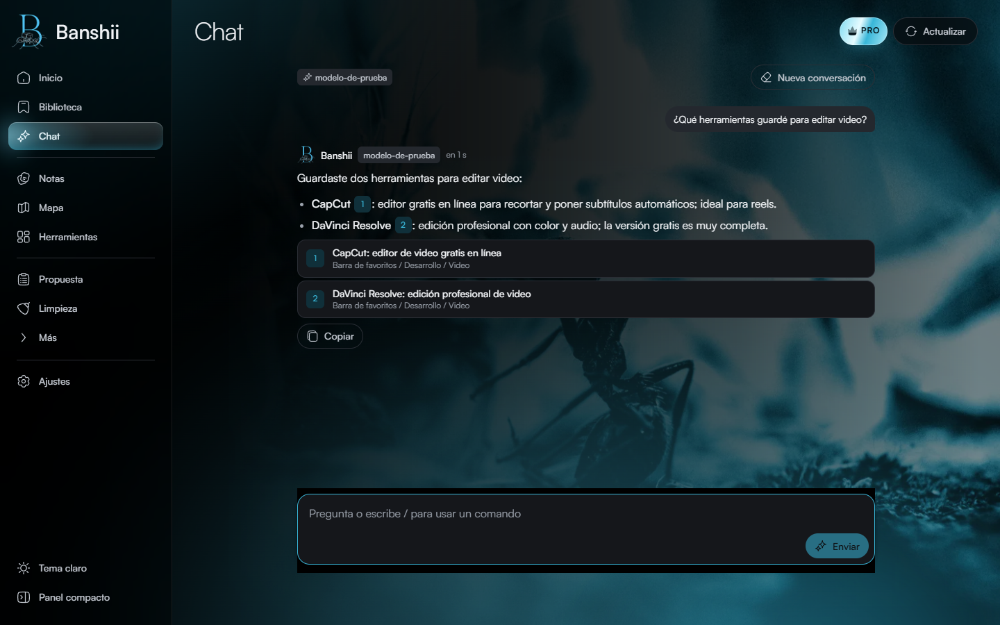
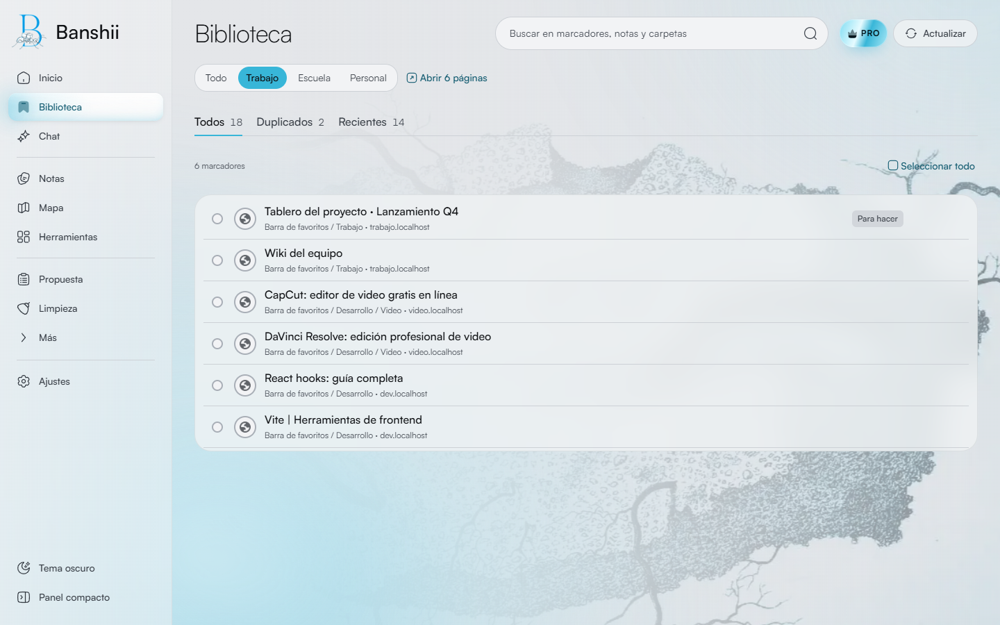
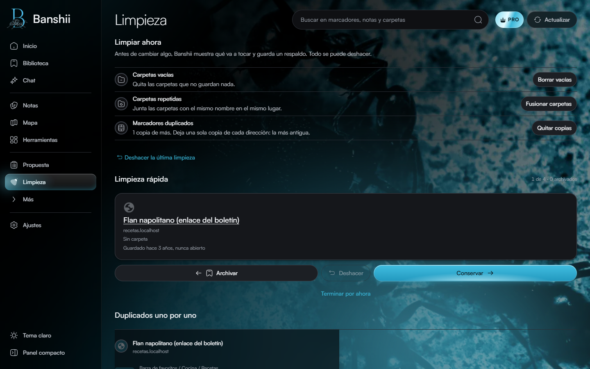
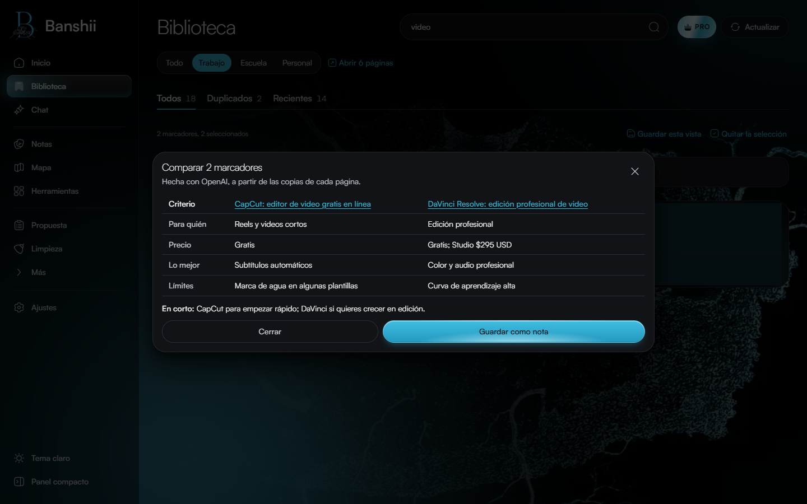
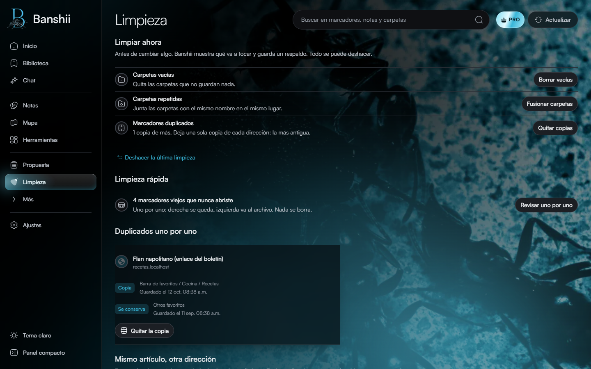

← Todos los proyectos
Proyecto / 04
Banshii
Un hogar para tus marcadores
Organizador inteligente de marcadores con extensión de navegador, aplicación de escritorio y una vista web de prueba. Busca facilitar la clasificación y recuperación de enlaces.

01 / Propósito
Una idea llevada a la práctica.
Proyecto personal.
Áreas y tecnologíasTypeScript · React · Tauri · extensión MV3
Esta ficha presenta el alcance documentado y material visual seleccionado. El código de desarrollo y los datos privados permanecen fuera de esta vitrina.
02 / Lo que hace
Funciones principales
- Organización incremental que conserva una taxonomía aceptada.
- Extensión de navegador para leer y aplicar cambios a marcadores.
- Aplicación de escritorio para análisis y trabajo local.
03 / Vista del proyecto
Así toma forma.
Capturas de la versión en desarrollo, realizadas en octubre de 2026 con marcadores de demostración. No contienen la colección personal del autor.






04 / Explorar